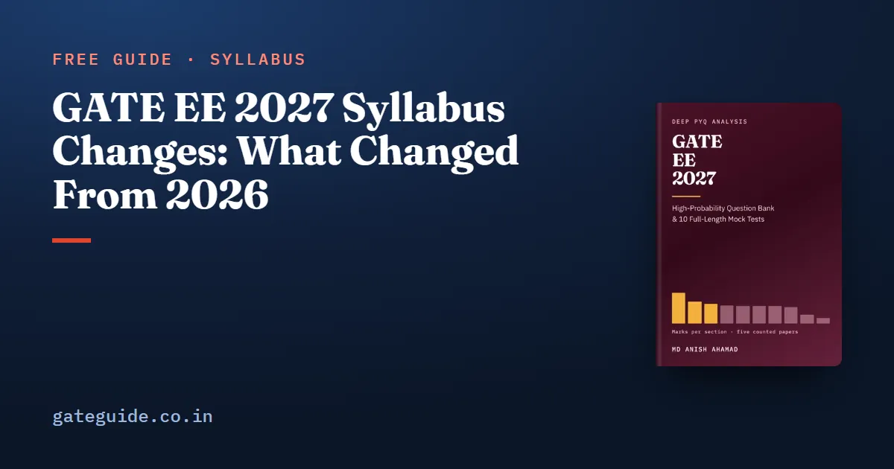

GATE EE 2027 Syllabus Changes: What Changed From 2026

The GATE EE 2027 syllabus did not change in any way that affects what you study. Compared word by word with the 2026 document, it adds no phrase, removes no phrase and rewords no phrase. The single change of wording is one corrected spelling: "Butterwoth" in 2026 became "Butterworth" in 2027. This guide shows how that comparison is done, what the older syllabi add to the picture, and what an unchanged syllabus means for your notes and old papers.
In this guide
Key takeaways
- Across all 217 phrases, the 2026 and 2027 EE syllabi differ by zero added, zero removed and zero reworded phrases.
- The only wording change is the spelling of Butterworth in Section 9; nine sections are identical to the punctuation mark.
- The 2024 and 2025 syllabi also name the same 217 phrases, so the three most recent papers were set on the same named topics.
- The 2022 and 2023 syllabi could not be obtained from their organisers' sites, so no claim is made about them.
- An unchanged syllabus means nothing is dropped to skip and nothing new to add; old papers stay valid.
What "changed" means when you compare two syllabi
A phrase is one item in the syllabus, separated from the next by a comma, semicolon, colon or full stop. "Bode plots" is a phrase; so is "Economic Load Dispatch (with and without considering transmission losses)".
A phrase is added if it appears in the new document and not the old, removed if the reverse, and reworded if the same slot holds different words. A spelling correction fixes a misspelt word without changing the topic. A token is a single word or punctuation mark, and a token comparison catches changes a phrase comparison can miss, such as a new capital letter or full stop.
Only added, removed and reworded phrases change what you might be asked. Everything else changes how the document looks.
How a word-by-word comparison is done
The GATE EE 2027 book made the comparison with a program reading the two official PDFs. You can repeat the method by hand on any section.
A worked example on one phrase
Take the Section 9 text about filters in both years.
- Split each year's text on its own punctuation. The 2026 fragment gives the phrases "Active Filters", "Sallen Key" and "Butterwoth". The 2027 fragment gives "Active Filters", "Sallen Key" and "Butterworth".
- Fold case and spacing only, then line the two lists up. The first two phrases match exactly.
- The third pair differs by one letter. Ask whether the topic changed. It did not: both name the Butterworth filter, so this is a spelling correction, not a rewording.
- Repeat for every section, then check the whole document for any word that appears in one year and not the other.
That last check is the safety net. For 2026 against 2027, the only word in one document and not the other is the misspelt and corrected Butterworth.
Trap: Do not trust a change list that does not show its method. A list copied from another list can invent changes, and a wrong change list is worse than none.
The result, section by section
| Section | 2026 phrases | 2027 phrases | Added | Removed | Reworded |
|---|---|---|---|---|---|
| 1. Engineering Mathematics | 53 | 53 | 0 | 0 | 0 |
| 2. Electric circuits | 22 | 22 | 0 | 0 | 0 |
| 3. Electromagnetic Fields | 20 | 20 | 0 | 0 | 0 |
| 4. Signals and Systems | 12 | 12 | 0 | 0 | 0 |
| 5. Electrical Machines | 31 | 31 | 0 | 0 | 0 |
| 6. Power Systems | 20 | 20 | 0 | 0 | 0 |
| 7. Control Systems | 14 | 14 | 0 | 0 | 0 |
| 8. Electrical and Electronic Measurements | 11 | 11 | 0 | 0 | 0 |
| 9. Analog and Digital Electronics | 21 | 21 | 0 | 0 | 0 |
| 10. Power Electronics | 13 | 13 | 0 | 0 | 0 |
Both documents are two pages and contain 923 tokens each. The layout did change in two ways that touch nothing examinable. The page header now reads "GATE 2027" and "IIT Madras | Organizing Institute" instead of naming IIT Guwahati. And each section's name now sits on its own line, with a blank line between sections.
Remember: Zero added, zero removed, zero reworded, one spelling corrected. That is the whole change list for GATE EE 2027.
What the 2024 and 2025 comparisons add
A syllabus that held still for one year is useful. One that held still for several years is more useful, because it tells you how far back the past papers match your syllabus.
The book compared the 2024 syllabus (IISc Bengaluru) and the 2025 syllabus (IIT Roorkee) with 2027 in the same way.
| Syllabus | Organiser | Added | Removed | Reworded | Spelling | Capitalisation or punctuation |
|---|---|---|---|---|---|---|
| 2024 | IISc Bengaluru | 0 | 0 | 0 | 1 | 14 |
| 2025 | IIT Roorkee | 0 | 0 | 0 | 1 | 0 |
| 2026 | IIT Guwahati | 0 | 0 | 0 | 1 | 0 |
The 2024 differences are things like "dc" printed in lower case where 2027 prints "DC", and three full stops that 2027 adds. None of them changes a topic.
The 2022 and 2023 syllabi could not be compared. The organisers' GATE sites for those years could not be reached when the book was compiled, and no third-party copy was used instead. So nothing is claimed about them.
In one line: At least the 2024, 2025 and 2026 papers were set on exactly the topics you will sit in 2027.
What an unchanged syllabus means for your preparation
Your old notes are still complete
Nothing you studied against the 2026 syllabus has been removed, and nothing new has been added that you must find time for. A senior's notes from 2025 or 2026 cover the same named ground, though you should still check them against the document.
Old papers stay valid almost entirely
Of the 275 technical questions in the five counted papers from 2022 to 2026, only one sits on material the 2027 syllabus does not name. That is 2023 (Q57), a 2-mark question on microcontroller flags. Recognise it and move on.
There is nothing to skip on syllabus grounds
In a year when a syllabus drops topics, you can strike them out. In 2027 EE there is nothing to strike. If time is short, ration it by counted weight, not by deleting a named topic.
Some named topics have still never been asked
An unchanged syllabus also means the 2024, 2025 and 2026 setters could have asked every named topic, and some they did not. Thirteen topic groups, such as oscilloscopes, insulators and Schmitt triggers, produced no counted question in five papers. For those three recent years, that zero cannot be explained as "not on the syllabus then". It is a real gap in the record, and it does not make the topics safe to skip.
Check it yourself in ten minutes
- Download the 2027 EE syllabus from the official GATE 2027 website.
- Download the 2026 EE syllabus from the GATE 2026 portal run by IIT Guwahati.
- Read the two side by side, section by section, looking only for a different word.
You will find the Butterworth spelling and nothing else. The IIT Madras organising-institute guide explains why this syllabus is the one EE decision the 2027 organiser has published. Plan your calendar from the exam dates guide, check the registration and fee rules, and keep General Aptitude running, since it is common to every paper and did not change.
Quick revision
- The 2027 EE syllabus adds, removes and rewords no phrase compared with 2026.
- The only wording change is "Butterwoth" corrected to "Butterworth" in Section 9.
- Both documents have 217 phrases and 923 tokens; nine sections are identical to the punctuation mark.
- The 2024 and 2025 syllabi also name the same 217 phrases.
- Nothing can be said about the 2022 and 2023 syllabi, which could not be obtained.
- Only one counted past question, 2023 (Q57), sits outside the 2027 syllabus.
- An unchanged syllabus gives you nothing to skip; ration time by weight instead.
Frequently asked questions
Has the GATE EE syllabus changed for 2027?
Not in any examinable way. Comparing the official 2026 and 2027 EE syllabus PDFs phrase by phrase gives no phrase added, none removed and none reworded across all 217 phrases. The only change of wording is the spelling of Butterworth in Section 9, plus a new page header and layout. Confirm on the official GATE 2027 site.
What is the only change in the GATE EE 2027 syllabus?
The word Butterwoth in the 2026 Section 9 text, under active filters, is spelled correctly as Butterworth in 2027. Nine of the ten sections are identical word for word and punctuation mark for punctuation mark. The page header now names IIT Madras as the organising institute, which changes nothing you study.
Can I use GATE EE 2025 and 2026 study material for 2027?
Yes. The 2024 and 2025 syllabi also add, remove and reword no phrase against 2027, so at least the three most recent papers were set on the same named topics you will sit. Notes and question practice built on those syllabi remain valid, apart from one microcontroller question in 2023 that sits outside the current syllabus.
Were any topics removed from the GATE EE syllabus in 2027?
No topic was removed. Every phrase in the 2026 document appears in the 2027 document. That also means there is no dropped material you can safely skip. The only counted past question outside the 2027 syllabus is a 2023 question on microcontroller flags, and microcontrollers were not newly removed in 2027.
Sources
- GATE 2027 official website (IIT Madras)
- GATE 2027 EE syllabus PDF (IIT Madras)
- GATE 2026 official website (IIT Guwahati)
Dates, fees and the syllabus are set by the GATE 2027 organising institute and can change. Always confirm at gate2027.iitm.ac.in.